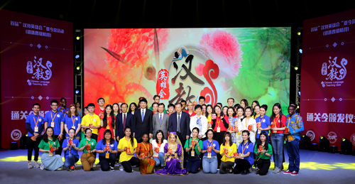
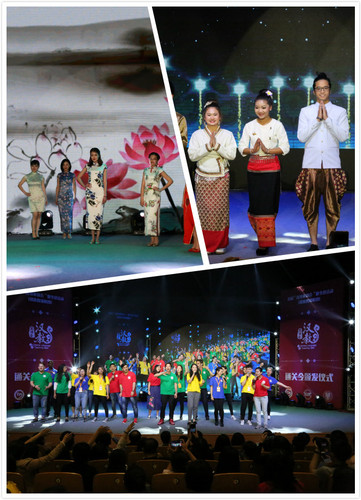
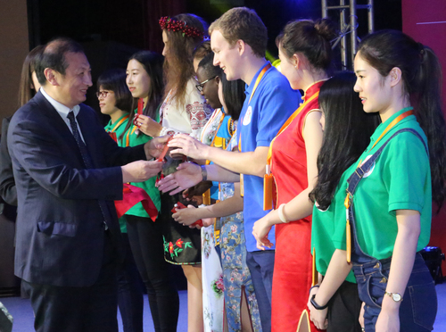
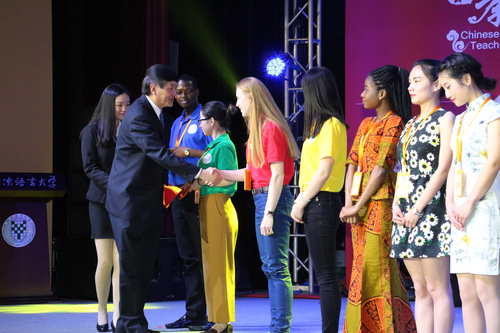
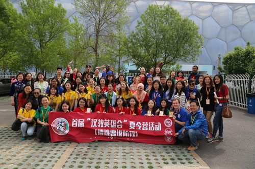

每日一篇——首届“汉教英雄会”/ 夏令营活动遴选晋级比赛前50强榜单出炉
 446
446
来源：北京语言大学-校园新闻 作者：孔院事业部
4月16日，由孔子学院总部／国家汉办和全国汉语国际教育专业学位研究生教育指导委员会共同主办,北京语言大学负责承办的首届“汉教英雄会”夏令营活动遴选晋级比赛在北语完美落幕。经过紧张激烈的比拼，前50强名单荣耀诞生，北语三名学子在比赛中脱颖而出成功晋级，获得机会参加今年6月举办的夏令营活动。

活动现场
北京语言大学校长崔希亮、全国汉语国际教育专业学位研究生教育指导委员会副主任委员、天津师范大学副校长钟英华、全国汉语国际教育专业学位研究生教育指导委员会副秘书长、孔子学院总部/国家汉办代表赵燕青、孔子学院总部/国家汉办代表师资处副处长何薇、华东师范大学国际汉语教师研修基地副主任丁安琪、北京语言大学校长助理、汉语国际教育学部主任张旺熹、汉语速成学院党总支书记迟兰英、孔子学院事业部主任陈丽霞、副主任邱萍等出席了活动。

授予仪式开始前，汉教英雄们参加了中华博艺文化体验活动,体验了中华。晋级仪式在柔和浑厚、宏阔低沉，富有草原风情的马头琴乐曲声中拉开帷幕。身着民族服饰的表演者置身于舞台背景的茫茫草原之中，深沉醇厚的马头琴声,带着观众的悠悠思绪带到辽阔的蒙古草原，也让观众感受到了蒙古人民的热情、豪放。随着又一阵悠扬乐曲响起，视觉盛宴“旗袍秀”也随之登场，“青花瓷”旗袍蕴含着中华传统审美元素，展现了中国民众对美的追求。在世界各国民众服饰展览的节目中，身着民族服装的各国汉语教育硕士向大家展示了本民族的风采。合唱《明天会更好》由中外选手合作完成，真挚的感情、动听的歌声收获了掌声与喝彩。

崔校长致辞
北京语言大学校长崔希亮致辞，他首先向孔子学院总部/国家汉办、全国汉语国际教育专业学位研究生教育指导委员会、中国教育电视台的大力支持表示了衷心的感谢，同时也向能够顺利获得“汉教英雄”称号的参赛选手表达了祝贺。他表示，北京语言大学素有“小联合国”之称，生源国覆盖丝绸之路64个国家，为世界各国培养出了约16万汉语人才。北语这所国际型大学服务于中国文化走出去的国家战略，拥有世界一流的中国语言文学、汉语国际教育等学科和师资队伍，为世界各国培养了大批友华校友，展现出独特魅力。他以“唯大英雄能本色,是真名士自风流”表达对汉教英雄的期望和鼓励，希望他们能够在未来的舞台上大展身手，为汉语国际教育事业增光添彩。

赵燕青副处长颁奖
“汉教英雄大会”评委代表华东师范大学国际汉语教师研修基地副主任丁安琪教授在晋级仪式上发言。她说“汉教英雄会”夏令营活动遴选晋级比赛为全体参赛同学营造了一个良好的互动学习、互动交流的平台，让选手们充分展示了自己的专业能力、教学能力、文化传播能力及中华才艺。大家在参赛选手身上看到了全国汉硕生积极向上、朝气蓬勃的精神面貌，看到了汉语国际教育的美好明天和光辉未来。
最后她衷心祝愿“汉教英雄”夏令营活动圆满成功。带队教师代表、南京大学杨雪丽副教授在晋级仪式上发言，她说汉语国际教育师资队伍不断发展壮大，对外汉语教学也受到越来越多的关注和重视，希望“汉教英雄大会”能继续举办下去，给对外汉语人提供交流、互动的平台。参赛的外国选手安德烈大学毕业后他选择在俄罗斯做中文老师，为了更好的提高自己的教授汉语的水平，他选择来中山大学读硕士。他表示在以后的学习中会继续努力加强汉语教学能力和中国文化传播能力，让全世界都来了解中国。参赛中国选手孙羽发表了参赛感言，她说，“汉教英雄大会”是一次实现梦想的机会，是一个展现梦想的舞台。本届“汉教英雄会”是一个开始，收获已远远超出于晋级本身。

钟英华副校长颁奖
全国汉语国际教育专业学位研究生教育指导委员会副主任委员、天津师范大学副校长钟英华代表教指委在晋级仪式上致辞。他说 “汉教英雄会”活动很好地契合了中华文化走向世界，很好地契合了“一带一路”中国和沿线国家命运共同体的合作，很好地契合了孔子学院发展在新形势下对师资的新要求，很好地契合了汉语国际教育硕士渴望的知识能力水平的提高。他感谢孔子学院总部/国家汉办师资处的领导、支持，感谢评委和指导老师对选手耐心细致的帮助，感谢北京语言大学为保障赛事的顺利进行付出了辛勤劳动。

汉语联动世界，中外交流互融，民心沟通互解。目前全世界涌起汉语热和中国文化热，汉语国际教育的地位与日凸显，汉语国际教育硕士研究生专业也日益受人瞩目。截止2016年底，全国共有110所汉语国际教育硕士培养院校，共计招生35725人，其中中国学生27404人，外国留学生（包括奖学金生）8321人，有外国留学生的共有96所院校。此次参赛选手是汉语国际教育青年一代的佼佼者，他们有着丰富的个人经历，他们为了汉教梦不辞辛苦，为了让更多人了解汉语国际教育事业他们来到我们的舞台上。

汉语国际教育硕士是对外传播中华文化的中坚力量，他们以语言传递友谊，架设起中国人民与各国人民之间文化交流的桥梁。近年来，随着世界各国汉语热的兴起，越来越多的外国人来到中国攻读汉语国际教育专业学位，未来他们将成为本土汉语教师的重要力量把汉语和中华文化带到世界各地。“汉教英雄会”的举办为汉语国际教育硕士的培养指明了方向，为未来汉语国际教育事业的发展奠定了基础。